YHD 云惠达科技有限公司
北京云惠达科技有限公司
云
实现医疗信息化平台化运营
惠
降低中小型医疗机构医疗信息化建设成本，降低病患就医成本
达
使用高效率协同工作机制达到云、惠的目的
我们有责任，我们也负责任
北京云惠达科技有限公司
追逐完善
- 集所有医疗信息化管理系统的模块于一体
- 适应不同的开发工具开发的应用系统
- 适应不同的数据库存储方式
- 建立统一的权限管理体系
- 建立统一的部署、升级、更新机制
- 建立统一的问题提交、解决体系
- 建立统一的客服体系
- 建立统一的接口对接体系
- 打造全开发工具下的开发者开发平台
- 建立APP的发布、试用、购买服务体系
共创未来
目前我们所有的客户（46家）都在使用我们统一的云惠达医疗信息化管理平台，不管大小，医生、护士的工作方式、工作要求都是一致的， 这就造就了我们的软件统一化进程的第一步；在流程上，小型医疗机构可能没有大型医疗机构那么完善，那么我们使用内嵌配置的功能来实现不同的流程流转， 使其符合小型又符合大型医疗机构的需求，这个配置目前已达到600多项之多，可见不同医疗机构对待医疗信息化的改造有多么的复杂； 但即使这样我们也无法避免我们的平台出现一些不可预知的BUG， 但是我们已经在研发问题反馈及统一回复功能，使所有的客户的所有人员都有偿参与到我们的平台建设中来，使我们的平台愈发强大。
同时我们为实现协同办公的模式实现效率最大化方面，做出了研发协同办公模块(云办公)的计划，目前已经实现我们的销售、 服务人员通过办公系统实现软件的有效期及维护有效期的控制、维护费的自动提醒功能；后续将实现财务人员通过我们的办公系统实现发票的自动打印、 合同自助打印、收款自助查询功能，医院通过我们的办公系统自助提交软件需求、 根据模板自动生成、打印维护合同、接口合同等所有的合同，上传付款凭证等工作，维护人员通过办公系统参与问题的解答及快速回复。
通过降低我们的运营成本，降低医疗信息化产品的研发成本，来降低医疗机构医疗信息化建设的成本， 并且通过我们的平台使医疗机构的信息化更加稳固，更加实用，我们所做的一切都只有一个目的：降低医疗成本
医院信息化综合管理平台系统（HIS）
云惠达HIS系统，历经2009年研发成功，到2014年的新版HIS、LIS、MER一体化产品上线运行 将医疗信息化正式定义为产品化运营，再到2015年全部客户免费更新到完全统一的版本，不断砥砺前行， 在做到了数据本地化安全的同时，又做到了功能的及时更新与补充。2017年在30多家医院同时上线自动升级、 自动更新功能。至此，对于不同医院的统一与不统一的功能要求与维护都能够做到精准定位、及时反馈、及时处理、及时解决、 及时更新、及时应用；
-
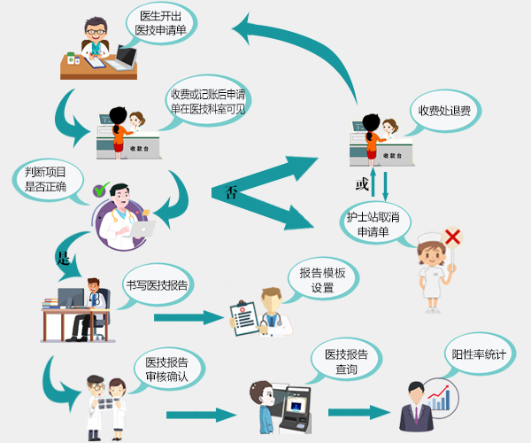
• 各模块详情信息
- 系统维护：
- 导诊平台
- 卡管理:
- 门诊挂号
- 门诊医生工作站
- 门诊护士工作站
- 门诊收费
- 住院管理
- 住院医生工作站
- 护士工作站
- 药库管理
- 药房管理
- 物资管理
- 固定资产
- 财务管理
- 院长查询
- 手术管理
- 医技管理
- OA平台
- 农合接口
- 医保接口
- EMR电子病历
- LIS系统
- PACS系统
- 居民健康管理
- 退费审批系统
- 疫情上报系统
- ICU管理系统
- 系统自动上传更新
系统字典、医保农合配置、系统配置
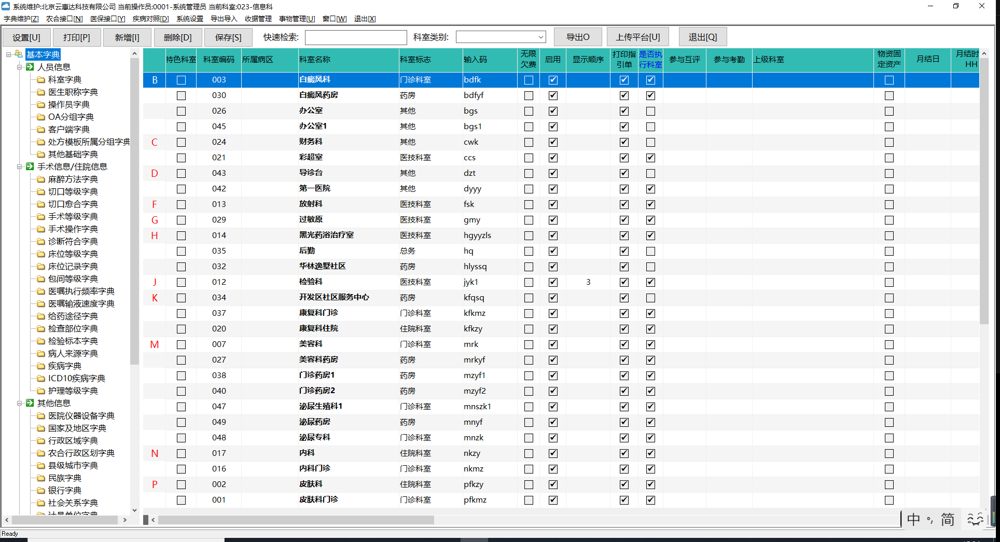病人登记办卡管理
一卡通系统
门诊挂号管理
门诊医生写病历、开处方、申请检查、申请检验管理
门诊输液及服药指导
门诊收费管理（可做医保、农合接口二次开发）
住院登记、住院收费结算管理（可做医保、农合接口二次开发）
住院医生书写医嘱、打印医嘱、申请检查、申请检验、书写病历及查看费用
护士校对医嘱、执行医嘱、停嘱医嘱、打印医嘱、临时计费、病人分床等
药库管理系统，出入库管理及库存盘点、查询、库存预警等；可配置多个药库
药房管理系统，可设定多个药房如门诊药房、住院药房、中药房， 药房发药、退药、出入库、药房调拨、药房库存查询、盘点、灵活先进的库存预警，药房出药汇总及一系列汇总报表
管理医院低于500元以下的物资信息
管理医院大于500元以上的资产
财务需要的统计报表
院长需要的统计报表
手术记录管理、手术查询、统计
各个医技科室进行医技操作的执行确认
1、医院内部沟通、通知 2、文件发送批阅
与农村合作医疗的数据传输接口
与医保中心的数据接口
标准版电子病历系统
检验科管理系统
医学影像管理系统
对社区及养老院的健康档案及定期检查表进行记录，妇科对孕产妇及儿童的保健手册管理
管理退费时的审批工作，时刻掌握医疗机构的关键部分。
1、门诊、住院医生录入传染病防治卡信息。 2、可审批传染病预防卡。 3、退回传染病预防卡记录。
1、支持ICU重症监护病人病例、医嘱、费用查看 2、支持ICU重症监护病人快速计费 3、ICU统计分析
1、支持系统更新上传功能。 2、支持恢复历史更新功能。
临床系统（LIS）
LIS系统(Laboratory Information System) 即实验室（检验科）信息系统，它是医院信息管理的重要组成部分之一， 自从人类社会进入信息时代，信息技术的迅速发展加快了各行各业现代化与信息化的进程。LIS系统逐步采用了智能辅助功能来处理大信息量的检验工作 ，即LIS系统不仅是自动接收检验数据，打印检验报告，系统保存检验信息的工具， 而且可根据实验室的需要实现智能辅助功能。随着IT技术的不断发展，人工智能在LIS系统中的应用也越来越广泛
-
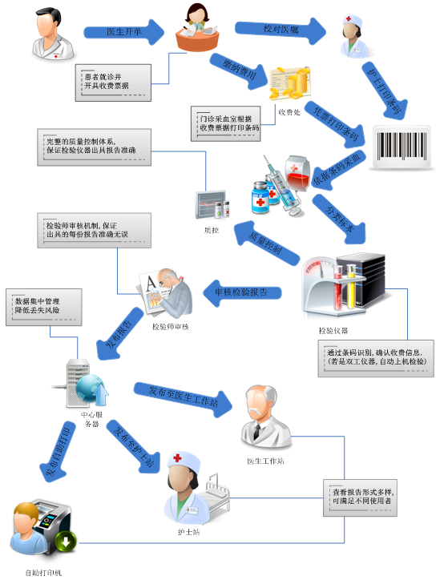
- 无纸化检验:
-
检验信息的准确性
- HIS—LIS检验联网
- 结果准确
检验信息的不准确性首先表现在由于医生字迹的潦草或者笔误导致患者信息不准确，如姓名看不懂， 或者患者门诊号或住院号出错。采用HIS—LIS联网后，这些信息都是有机器来产生和传递，避免了人工操作， 人为失误自然得到避免。
由于各仪器的检验结果自动从仪器传输到计算机，然后再自动存放到服务器上，打印出来的报告单和患者一一对应，不会出错。 另外患者的历史结果甚至几年前的结果，也可迅速查询得到。
- 成本核算
检验科实施LIS后，运行成本的节约表现在两个方面：
- 试剂、仪器使用率提高 因为对仪器、试剂的使用情况掌握的准确及时，可以避免试剂的库存积压，避免浪费。另外仪器因为整体运行效率的提升， 使用率提高了，减少了仪器的闲置，也是一种成本的节约。
- 纸张等耗材的节约 整个检验科实施LIS后，检验报告可以联网集中批量打印，我们的系统可以把几张报告单打印在同一张A4纸上。 同时还支持“套打“——即在事先印制好的报告单上，系统只需往该单据上打印检验结果即可，类似于现在的发票“套打”。如果成批印制报告单， 其成本可以比单纯够买打印纸要小。同时因为系统打印的内容少了， 打印机的消耗也小了，更进一步节约了成本。我们初步估计了一下，单是此项功能，每年可以节约接近10万圆运行成本。
- 无纸化检验 事实上，实施LIS后，所有的检验信息全部都在网上快速传递着，完全可以抛弃纸张。这样所有的打印消耗全都避免了， 还可以大幅度提高工作效率。
- 运行便利
- 计算机联网处理结果
- 打印联网
- 结果共享
- 漏费控制
-
检验流程控制
- 患者就诊流程
- 门诊患者：门诊患者凭医生开具的检验申请单到缴费处缴费，然后检验科即可得到该患者信息，因此可以为其做检验，出具报告。
- 住院患者：住院患者在医生下检验医嘱后护士为其下帐，检验科即可得到该患者信息，因此可以为其做检验，出具报告。
- 急诊患者：急诊患者因病情急必须立即进行化验，来不及缴费。因此走正常流程检验科得不到患者信息也就无法开展试验。为治病救人，系统允许用特殊方式下的急诊模式先行试验。
- 特批患者：医院领导因各种原因批准的特殊检验，不须缴费。因此走正常流程检验科得不到患者信息也就无法开展试验。针对这种情况，系统允许用特殊方式下的特批模式先行试验。
- 体检类检验：医院对外承接的体检类检验，通常都是人数众多批量的，同时费用也是集体统一付帐。因此不存在单个人员缴费的可能。检验科同样得不到患者信息。系统特别设立特殊方式体检模式试验。
-
医生操作流程
系统为每位检验科医生建立账号，医生用自己的账号登陆。系统依据不同的账号对医生的工作做相应记录，同时自动在检验报告上附上该医生姓名作为报告单上的检验者信息。当LIS服务器从HIS读取了患者的收费信息后，该医生即得到了患者信息，可以为其出具检验报告。急诊、特批、体检类别采用特殊情况情况来处理。
- 门诊、住院病人：门诊、住院病人是医院接收的绝大多数检验工作量之所在，也是目前检验费用流失的最大洞口之所在。为堵住该漏洞，本系统和HIS做无缝联结，确保HIS没有收费信息过来，就不给患者出具检验报告。同时，患者缴费的多少是和其检验项目严格相关的，本系统将严格按照HIS传过来的检验项目进行检验，做到检验报告单上不多出也不少出检验结果，有效地避免了小收费大检验的问题。具体的控制流程分为生化类和其它两大类。 生化类检验, 生化类是医院检验最为复杂也是变化最多的一类。由于不同医院HIS的多样性、HIS功能的完善程度以及医生开具化验单的不确定性，表现在系统从HIS得到的收费信息里，检验项目的不确定性非常多和复杂。表现为：
- HIS对所有的检验项目都不加区分，全部标记为检验费。这样，系统只能把每条收费记录对应成生化全项。只能做到不交费不出报告，而交了费则可以出全部生化检验项目的报告。不能解决小收费大检查的问题。
- HIS能区分出不同的检验项目，系统可以做到检验报告和患者缴费金额严格一致。对可能出现的患者一次交费出现多条收费记录的情况，系统可以自动合并这些记录，使其成为一条信息，进而把结果打印在同一张报告单上。
- 其它类检验 这些包括血常规、尿常规、尿沉渣、血凝、血气、乙肝等检验项目固定的检验类别。由于检验项目数量的固定，系统设定好后，无论HIS性能如何，只要能产生收费记录，本系统均能正确无误的出具检验报告。 后续操作流程 上述操作全是检验信息进入系统的过程，系统的费用控制流程就此完成。接下来操作是处理检验结果、打印检验报告、查询历史结果、仪器质控管理。
- 处理检验结果 对于合同里列出的仪器，本系统将自动接收其检验结果。对于需要计算产生的结果，本系统可以自动计算出其结果。对于数值类检验结果，本系统可以自动判定结果的偏高、偏低状态。检验结果的人工修改可以限制（有权限才能修改结果）也可不加限制，具体由医院决定。
- 仪器联结说明 本系统不控制仪器的运行、单向接收仪器结果。对于进口仪器，由于其制造符合医疗仪器制造规范，绝大多数都能联结。而对于绝大多数国产仪器，尤其是小厂家的小型仪器，不能保证一定能联结。有些仪器的检验结果包含图形，对于通用图形，本系统予以支持。其它由设备厂家定义的图形，受厂家技术资料封锁的限制，可能无法实现。
- 打印检验报告 报告可以逐个打印也可批量打印。系统提供三种打印格式供用户选择使用。打印支持所有Windows下的打印机。
- 查询历史结果 可以根据患者姓名、检验项目、时间、检验医生、病历号、标本号查询历史结果。同一患者的结果可以进行对比。
- 仪器质控管理 自动接收仪器质控结果并生成质控图，并可打印出来.
- 患者就诊流程
也可称之为数字化检验。在软件系统的支撑下，患者一旦挂号或者住院，他就获得了一个唯一的标识（门诊号或住院号，软件自动生成）。 门诊医生或住院医生所开出的任何化验信息都与患者的标识相关联，化验信息一旦生成，检验科立即就能得到。检验结果出来后数据立即存入软件系统， 门诊医生或住院医生也马上就能看到。
实施LIS后，整个检验科乃至整个医院的检验信息就全在网络系统（LIS）的管理之下，这能带来快捷高效的运行便利。 这个便利主要表现在检验科在申请单录入时。目前国家要求必须给患者出具中文检验报告，为满足该项要求，绝大多数仪器都配备了中文软件。 这样，在给患者出报告前不可避免的先要把患者信息输入计算机。对于大型医院医院的海量报告单数量来讲，这个输入的工作量是非常巨大的。 而实施LIS后这部分工作完全自动化了。患者信息的输入被均匀分配到门诊挂号、门诊医生、病房医生或护士、门诊取血点等等。
检验结果在给患者打印报告前，检验医生必须首先对结果进行审核。检验科联网后，任何一台计算机都可以处理任何一台仪器的数据。 这样避免了计算机的闲置。而现在的情况是，计算机没联网，某台计算机仅仅针对一台仪器，工作完成后只能闲着。
由于检验数据都是在网上的，连上网的任何计算机都可以进行打印。这样就可以很方便的分配打印任务，如设立打印工作站， 专职进行打印；也可以把打印均匀分配到护士工作站上进行打印。
医生或患者可以随时查看检验结果，尤其是历史结果，还可以进行结果的对比。其中历史结果对比是LIS给医院带来的直接好处。通过项目结果数据的对照， 医生更容易判断患者病情的变化，更容易作出诊断结论。
系统必需得到患者姓名和检验项目才能生成检验报告。LIS是和医院收费软件（HIS）联结在一起的，无论是门诊患者还是住院病人，当医生为其开具检验申请或医嘱后， 收费软件处理其费用信息，包括：病人基本信息—姓名、性别、年龄；检验项目；送检科室以及送检医生。这些信息被ZDGHLIS读取,处理后形成系统特定检验信息。这时， 检验科在收到患者标本后即可开始试验，试验结束后ZDGHLIS即可为每位患者出据中文综合检验报告。因此，理论上，若患者未交费，系统得不到患者姓名和检验项目，ZDGH LIS无法生成检验报告，导致最终患者不可能得到检验报告。 急诊、特批、体检类检验在医生得到了相应的急诊号、特批号、体检号后也可以为患者进行检验并出具报告。急诊号、特批号、体检号可以由检验医生自己申请也可由医院统一放号。 采用何种方式由医院自行选择。急诊号、特批号、体检号的使用合法与否，最后由系统审核端统一审核。
电子病历系统（MER）
电子病历是随着医院计算机管理网络化，是医院病历现代化管理的必然趋势，其在临床的初步应用，极大地提高了医院的工作效率和医疗质量， 但这还仅仅是电子病历应用的起步。取代手写纸张病历。电子病历具有主动性、 完整和正确、知识关联、及时获取等特征，是医疗机构对门诊、住院患者（或保健对象）临床诊疗和指导干预的、数字化医疗服务工作记录。
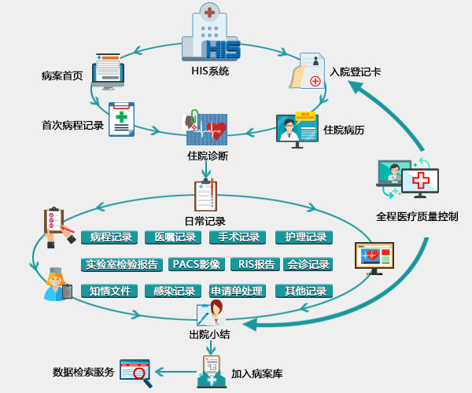云惠达EMR电子病历系统的主要特点有：
- 病历内容框架采取标准化、结构化。书写时只能选择系统提供的项目，不能自定义。
- 屏蔽外部文件复制，本病人的资料和“临床知识库”，关键词库的内容可以复制。
- 记录保存后仍可任意修改，签名之后本人不能修改，本组的上级医生可以修改。
- 上级医生修改的记录均带有标记，修改痕迹保存在服务器上。
- 住院病历和病程记录的签名均自动生成，用谁的用户名和密码进入就签谁的名，录入的姓名无效。
- 住院病历和病程记录的书写时间在签名的同时自动生成，录入的书写时间无效。
- 书写文书所需的病人姓名、性别、年龄、科室、床号、住院号均自动生成。
- 病历书写规范要求的时限和部分内容实时监控。
- 打印从形式上可以套打、重打、续打、选页打，从内容上可以清洁打印，即不打印上级医师修改痕迹。
- 初步诊断、最后诊断采用ICD10录入。诊断序号自由定义，序号可分等级。
- 系统通过程序提供的编辑器来书写病历。
- 住院病历和病程记录中已签名的任何记录均不能删除，未签名的记录可以删除。
- 接口扩展多样化，目前已对接河北省医保系统的智能审核平台。实时上传在院病人的病历信息。
云惠达EMR电子病历系统的主要功能模块有：
- 【住院医生工作站】：主要用于临床医生完成电子病历，其中包括住院病历、病程记录、手术记录、会诊记录、知情同意书、随访记录等。并能过与院方HIS接口，来完成医嘱和检验检查的申请查看报告工作等。
- 【住院护士工作站】：主要用于临床护士完成护理记录、护理病程、体温单、健康教育等单据。
- 【临床科室质控工作站】：主要用于对于本科室医生书写的病历质量进行监控及评估。
- 【电子病案管理系统】:主要用于病案室对归档病历进行评分和编目等工作。
- 【病历浏览工作站】:主要用于医技科室、麻醉科室、实习医生或其它医院管理人员查阅、学习病历。
- 【病历维护工作站】:主要用于质控科或病案室等病历管理部门对相关病历进行修正。
- 【病历模板维护工作站】：主要用于增加临床科室新病历模板和模板维护修改。
- 【住院质量控制工作站】：主要用于病历质量控制科室对临床科室医生成完病历的情况的环节质控和终末质控。
- 【病案借阅工作站】：主要管理病历借阅信息。
- 【系统维护工作站】：主要用管理本系统中的用户所拥有的权限。
- 【个性化设置】，主要用于院方对本院的一个初始化数据进行个性化维护修改工作。
PACS/RIS影像系统
云惠达PACS/RIS影像系统主要涉及到内容包括：医技设备（放射科、功能科）图像传输与采集、即标准DICOM的设备 （如MR/CT/DR/CR）与非标准的模拟图像设备（如B超、肠胃镜、病理等）的转换存储，以及医技科室医生的报告生成打 印等内容。
-
整体特点
- 完全Delphi自主开发,掌握技术核心
- 支持各种接口的PACS设备
- 完全集成于HIS---使门诊/住院医生、功能放射医生、影像检查设备多方面双向共享信息
- 压缩储存、传输----读图速度快，节省投资
- 完全兼容DICOM3.0标准、HL7标准、ISO11073标准----保护医院投资以及有强可扩展性
- 图像处理功能强大、细致、完善、使用方便
- 数据库支持Oracle,MSSQL,DB2,Sybase,并分别作了优化
-
稳定的PACS/RIS服务器
- 支持CT、MRI、NM、CR、DR、CR、DX、XA、US、OT、SC、VR、HD、X线胃肠、彩超，B超、内窥镜、显微镜图像等所有医学图像及波形类别数据
- 图像可储存于多个卷（RAID盘柜，硬盘，光盘，光盘塔），按优化的方式读取，可无限制地扩展图像的储存
- 将图像索引储存在数据库,图像以DCM压缩格式保存在优化的多级树目录下的文件形式(类别/年/月/日/ StudyUID/SeriesUID/InstanceUID,以便快速存取,迁移,备份)。
-
多种图像采集接口
- DICOM标准的接口
- ISO11073医疗仪器接口
- 非数字/网络接口
- 图像采集
- B超
- 内窥镜
- 老CT
- X光胃肠机
- 阴道镜
- 腔镜
- 支纤镜
- 图像扫描
- 图像文件转换
-
完全集成于HIS-与医院信息一体化
- 使门诊/住院医生、功能放射医生、影像检查设备双向共享信息。
- 临床医生开的申请单通过MWL/PPS直接传输到影像检查设备的电脑，减少数据录入，减少出错，提高效率。
- 检查图像及报告经功能科和放射科医生审核后,直接到门诊/住院医生的工作站桌面,有利于全面诊断
- 病人的其他医疗信息(LIS,病历,医嘱等)显示在功能科和放射科医生的桌面,有利于全面诊断。
-
图像无损压缩-储存传输
- 图像无损压缩(类似ZIP) ---压缩为原图大小的1/3。
- 储存更省---节省空间、电力、维护费用和投资。
- 传输更小---充分使用医院网络的带宽。
- 速度更快---打开图像更快速。
- 优化的快速压缩/解压缩算法。
-
得心应手的图像处理操作
- 多种W/L调节方式：
- 鼠标拖拉慢调
- 鼠标拖拉快调
- ROI自动调节
- 选择预定义W/L调节
- 选择预定义或图像内部LUT调节
- 直方图调节
- 直接输入值调节
- 多滚动条拖拉调节
- 多种图像缩放方式：
- 鼠标中间滚轮缩放
- 鼠标拖拉缩放
- 选择放大
- 键盘+/-（或大于号/小于号）缩放
- 可调放大倍数的放大镜
- 缩放采用专用插值算法,无码格现象
-
3D后处理功能
- MPR (Multiplanar Reconstruction)
- Curved-MPR 多平面重建
- MIP (Maximum Intensity Projection)
- Volume Rendering 容积重建
- Surface Rendering 表面重建
- 输出 3D图像为 AVI,MPG, TIFF, JPEG
院内自助交互终端一体机
云惠达院内自助交互终端系统功能完善、运行稳定并可以根据医院自需，个性定制一体机相应功能模块，现有功能模块分为： 门诊登记、门诊挂号、门诊费用查询、门诊缴费（医保）、报告单自助打印、住院费用查询、住院预存押金、医院各科室医生介绍、 收费价目表查询
-
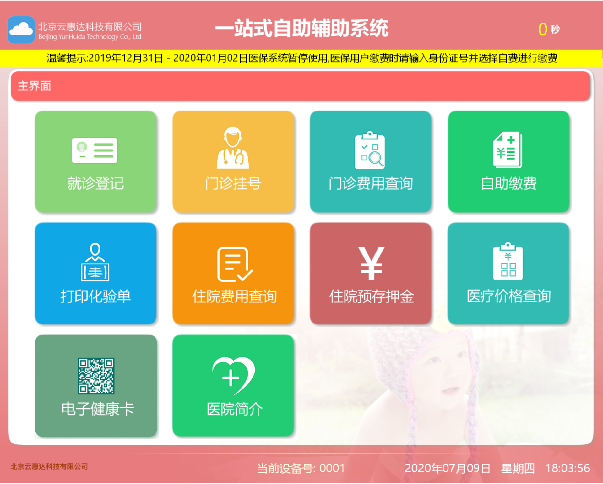
主要功能详情信息
- 门诊登记
- 门诊挂号
- 门诊费用查询
- 门诊缴费（医保）
- 报告单自助打印
- 住院费用查询
- 住院预存押金
- 医院简介
- 收费价格查询
- 自定义开发模块
1、首先提示扫描身份证 2、刷身份证后弹出病人详细的基本信息窗口 3、录入手机号码 4、自助机通过小票打印机打印带病人一维码的纸质小票前往门诊就诊
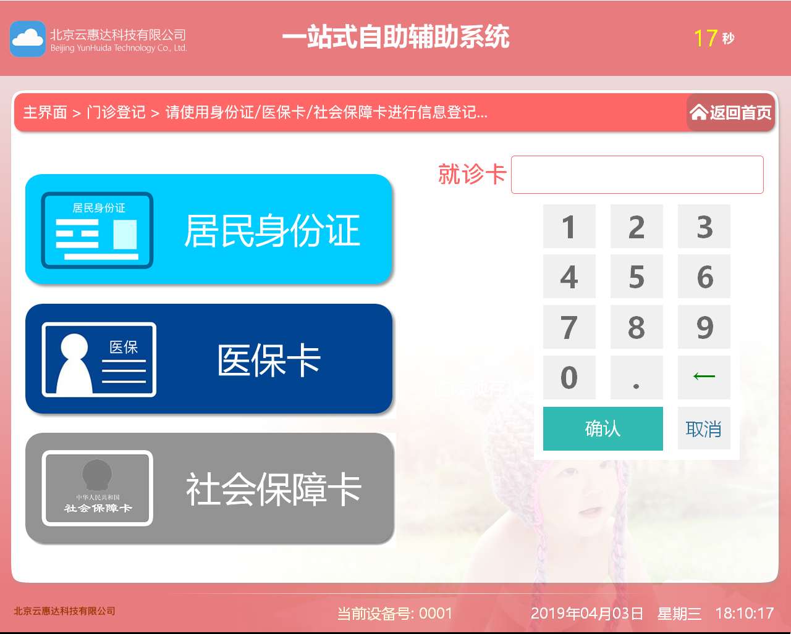1、刷身份证或者院内一卡通 2、显示病人基本信息 3、显示科室信息 4、选择科室信息 5、选择医生信息 6、选择上下午时间 7、确认挂号后打印挂号小票
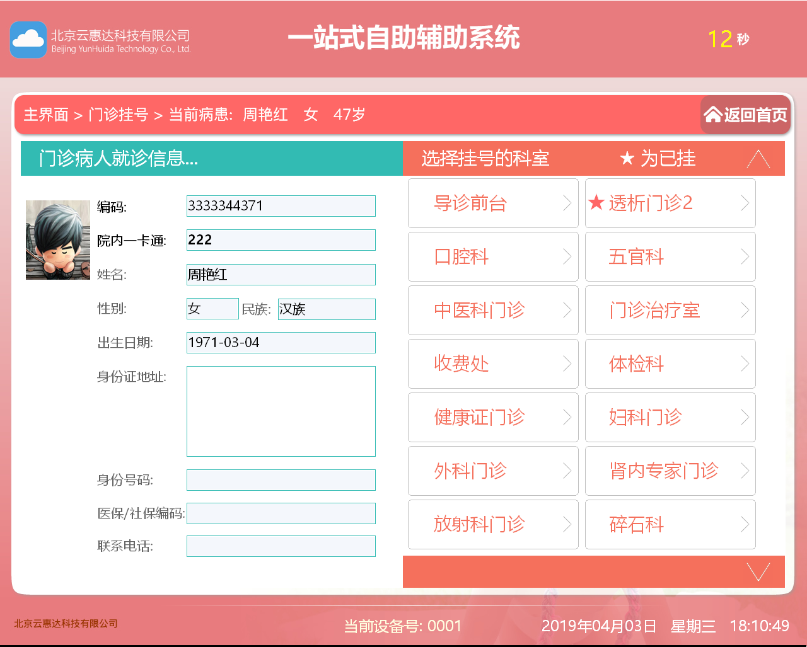1、刷身份证或者院内一卡通 2、默认查询当日未缴费记录 3、选择时间段查询历史缴费记录
1、刷身份证或者院内一卡通 2、选择当日所有未缴费记录 3、确认缴费（医保病人提示插入医保卡或者社保卡） 4、弹出付款码(兼容微信、支付宝)，用户扫描付款码，可设置和显示付款码等待时间，如未在规定时间内扫码支付则退回此次缴费。需重新刷卡进行缴费。 5、缴费成功打印缴费小票, 6、需要发票前往收费处补打正式发票
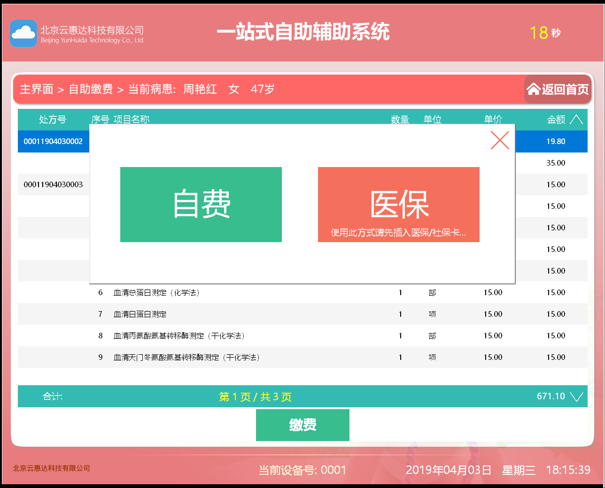1. 刷身份证或者院内一卡通 2. 默认查看当日检验报告记录(已出、未出、已打、未打报告的标识) 3. 默认选择已出、未打报告的报告单 4. 打印报告单 5. 系统保存报告单已达标识、次数。 6. A4格式报告单则提示前往检验科窗口打印 补打报告单： 7、用户选择已出、已打报告单 8、选择补打按钮 9、输入补打管理员密码进行补打
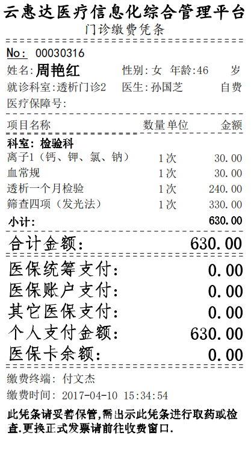1. 输入病人住院号、身份证号、手机号 2. 验证病人成功后系统显示该病人的费用汇总和费用明细 3、可打印费用清单
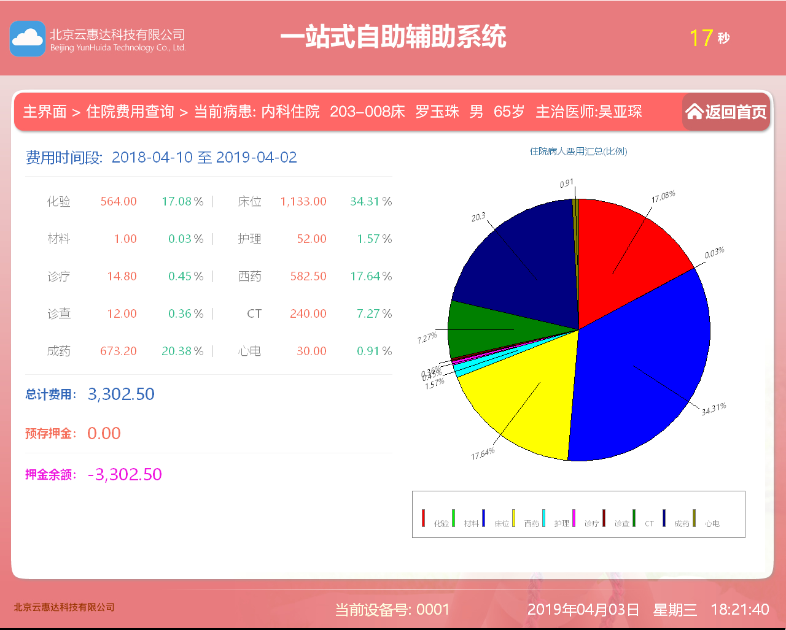1、输入病人住院号、手机号、身份证号 2、成功验证后显示该病人基本信息、预交金记录、余额信息 3、输入要预存的金额 4、系统显示付款码，可设置和显示付款码等待时间，如未在规定时间内扫码支付则退回此次缴费。需重新验证病人信息进行缴费。 5、用户扫码付款成功打印预交金小票(用户留存) 6、显示病人余额。
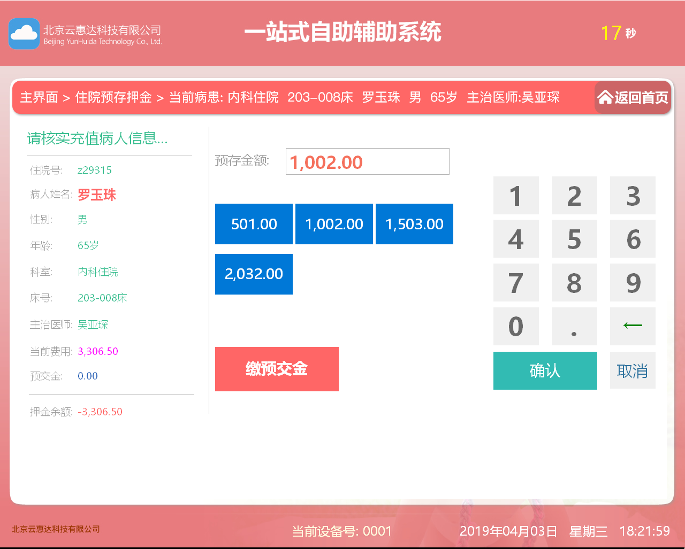1. 展示医院基本信息 2. 查看科室基本信息 3、查看医生基本信息
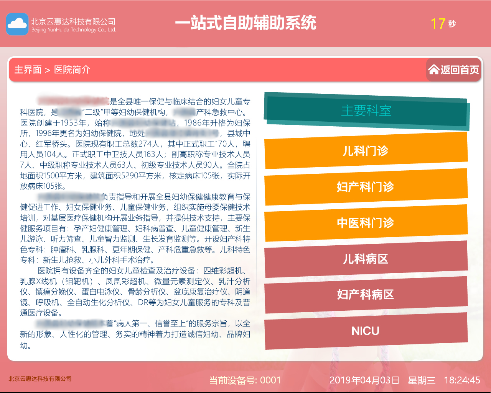通过拼音码查找收费项目，并显示收费项目的详细信息
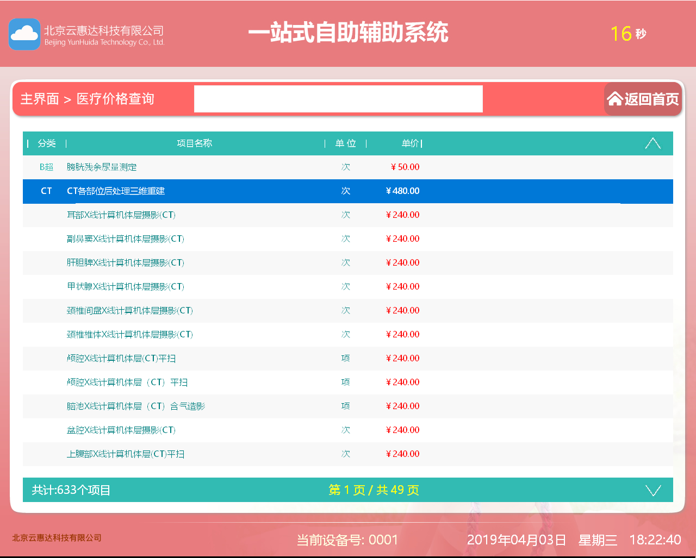根据医院自需，开发一体机相应的功能模块
体检系统
云惠达体检系统，是专为体检中心/医院体检科等体检机构，专门开发的全流程管理系统，通过软件实现检测仪器数据自动提取，内置多级医生工作台， 细化工作将体检检查结果汇总，生成体检报告登记到计算机系统中。 通过软件系统进行数据分析统计与评判以及建立体检相关的体检档案。从而实现体检流程的信息化，提高工作效率，减少手动结果录入的一些常犯错误
云惠达体检系统主要特点：
- 提高工作效率，减低劳动强度 手工录入信息、定制体检表非常繁琐、重复性强，现系统将准备工作全部计算机化。 团队体检不论人数多少，只需按团体名单格式设置，即可轻松完成。上百、上千人的团体，只需几分钟，且准确无误 变以往护士开申请单字迹不清楚及写错字的现象，利用数字手段节约了定制体检单、分拣化验单等环节的成本。 通过数据接口，获取相关结果，减轻各后续站点数据录入的工作量，减轻护理人员的劳动强度，减少交叉感染的机会。 大大缩短报告生成周期，成倍提高工作效率。
- 提高服务质量，增加体检客户的满意度 信息系统的高效与准确性为医务人员节省了很多时间，能更好地专注于客户服务。丰富的查询功能， 能及时发现漏查、漏录现象，并通知有关人员补查、补录。杜绝多收、漏收现象。字迹清楚、整洁的各种体检资料， 漂亮美观的体检报告，详细科学的体检建议，可完整保存体检资料等优质服务都大大提高体检客户的满意度。
- 提高管理水平、增加信息的利用率 ，通过信息系统，院领导及科室负责人可查询体检中心所有信息，并进行实时监控， 帮助决策者改进服务，进行量化绩效管理和决策分析。医务人员通过查询，获取所需体检客户的资料，提高业务水平。 体检单位可免费拷贝单位体检结果并进行分类汇总，从而使各单位对自己员工的健康状况有一个全面的了解，有利于追踪和复查， 真正做到有效的健康管理。
- 体检管理系统的使用，可实现了体检中心的无纸化办公，也使健康体检管理更加系统化和规范化，大大提高了医务人员的整体素质， 增加了体检客户的满意度。
主要功能特点：
-
体检管理
- 体检集中管理
- 体检快速录入
- 单项检查结果录入
- 批量结果录入
- 总检结论录入
- 批量生成总检
- 复查人员信息
- 健康档案录入
-
查询
- 体检报告查询
- 综述报告查询
- 体检结果查询
- 复查人员查询
- 体检人员查询(按体检状态)
- 体检人员查询(按项目检查状态)
- 未检项目查询
- 公众自动查询
-
统计
- 体检综述汇总
- 阳性结果汇总
- 体检疾患清单
- 疾病人数统计
- 疾病分布统计
- 个人体检数据分析
- 体检正常清单
- 单位体检报告
- 职业体检报告汇总
- 单位费用统计
- 医生工作量统计
- 操作员工作量统计
- 科室工作量统计
- 科室工作压力分析
- 体检人数统计
- 项目超标统计
- 查环查孕统计
-
检后服务
- 短信发送体检报告
- E-mail发送体检报告
- 网站发布体检报告
- 体检数据导出
-
办证
- 健康证办理
- 健康证明办理
- 健康证查询
- 健康证明查询
- 自定义健康证
- 自定义健康证明
-
健康评估
- 健康评估集中录入
- 登记评估人员
- 录入调查问卷
- 查看评估结果
- 体检项目对照
- 评估文件卷管理
BI数据决策中心
医院运营情况一屏掌握，今日数据、本月数据、本年数据、历史数据，每隔一分钟自动刷新展示，实时监控医院运营情况
- 今日数据
- 本月数据
- 本年数据
- 历史数据
今日数据，实时展示今日汇总信息，总收入、总人次，门诊、住院、收入、诊疗各项数据汇总按比例展示， 以及各部门收入、人次实时变动，3秒刷新；对比清晰，一目了然； 初诊、复诊、医保、自费、在院、出院、结算……凡您关心，皆可展示；
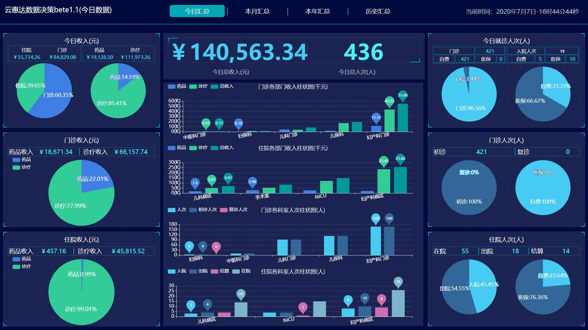本月汇总数据按天实时展示，门诊、住院、收入、人次、药品、诊疗按天分析，一眼看出本月波动情况， 各部门本月每天的收入、人次情况在本页固定区域循环播放展示、一屏之内展示您最关心的数据；
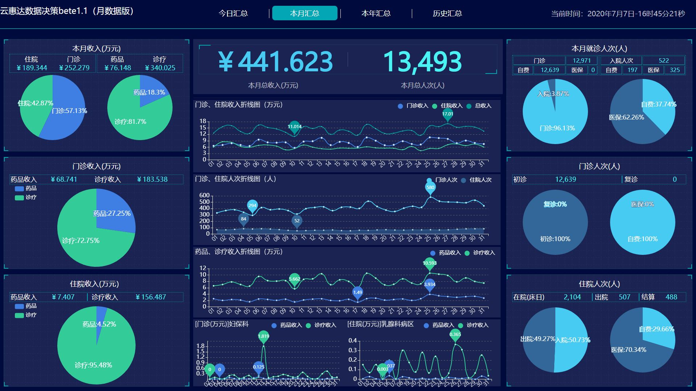本年数据按月展示，汇总数据以及各项明细数据时间线上的对比增长，各部门的盈收变化以月为单位清晰展示；
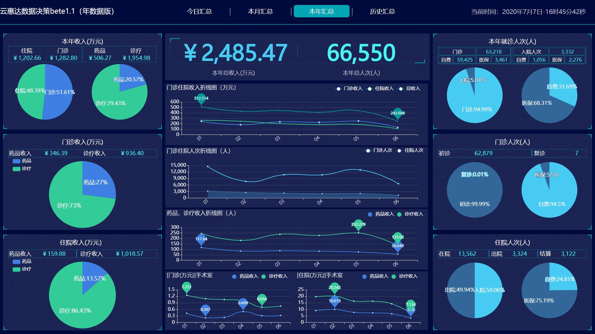历史数据按年展示，各项您关心的数据，以年为单位，从您用我们的系统的那刻起，凡您关心，皆可展示；
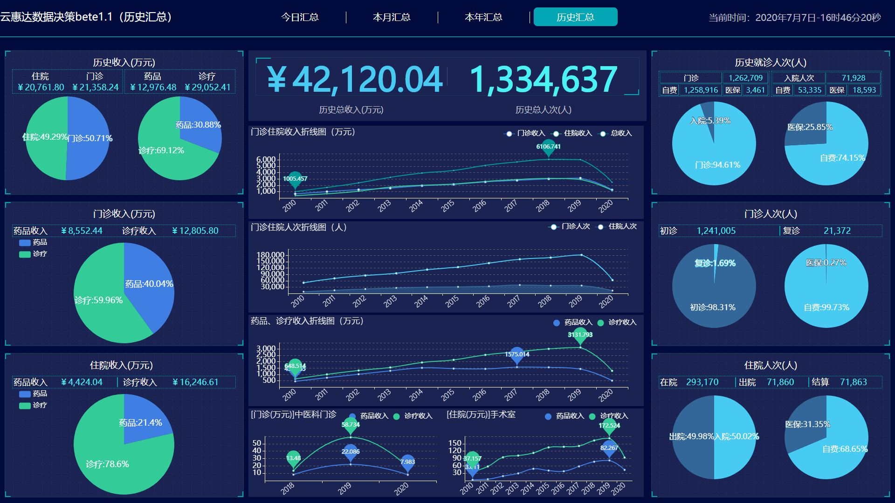各项您关心的数据，告诉我们，我们统计，我们定制，我们展示；给我们一屏的空间，展示您关心的所有数据； 点击此处，查看线上展示样例（谷歌浏览器，F11进入全屏）
客户案例
| 河北省 | 辽宁省 | 河南省 | 山西省 | 江西省 | 其他地区 |
|
|
|
|
|
|
分诊叫号
近几年，体现人性化管理的多媒体排队管理系统，已经在许多窗口服务行业广泛应用， 如北京、上海、广州、深圳等发达地区的城市，其大部分银行、工商、税务、医院等已经开始使用多媒体排队管理系统。
在窗口服务行业中，医院是人员最密集的地方之一，当然也是排队叫号最多见的地方。医院使用分诊叫号系统以后， 可很好地解决患者就诊时分诊叫号无序、医生工作量不平衡、环境的嘈杂等问题。医生只需简单按一下呼叫键就可按序呼叫患者前来就诊， 避免人工喊号。因此，分诊叫号系统在医院的应用，不仅能够优化服务和工作环境、 使病员和医生情绪得以放松，并且提高了服务效率和质量、树立了医院的良好形象，有利于提高医院的经济效益和社会效益。
-
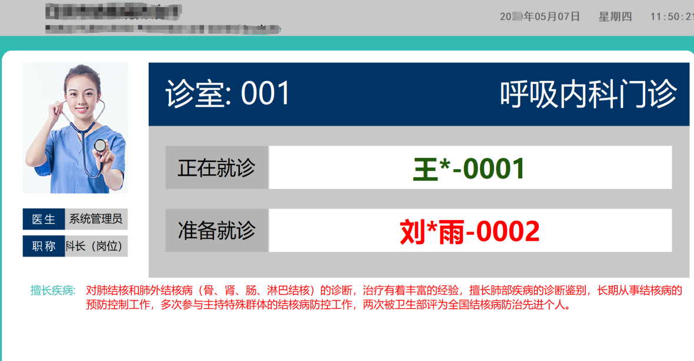
- 病员方面：系统按序自动安排病员到最合适的或病员自己所选择的医生处就诊，真正实现了“个性化”服务和“互换式”服务。避免发生排错号、 插队等情况和混乱、嘈杂的现象，减少许多不必要的纠纷。营造平等、合理、有序的良好环境， 给病员带来轻松愉快的心情。尊重人性，保护病员隐私权利。病员可以充分利用等候时间做其他事 ，节约病员的时间
- 医生方面：尊重病员的同时也得到病员的尊重，有利于改善工作情绪。 优化工作环境，减少工作失误，提高工作效率。 分诊叫号系统的多种功能带来了工作的灵活和变通。如：暂停、转移、特叫等。
- 医院管理者方面：分诊叫号系统实时提供医生服务和病员的动态信息，并可利用网络传送到远程计算机进行实时监控。根据提供的实时动态信息， 科学设置岗位，提高服务效率。根据系统生成的多种统计报表， 进行准确的量化考核，提高医生的积极性。提高服务质量，提高管理水平，树立良好形象，有利于提高医院的经济效益和社会效益。
通过实施系统，将实现以下重点目标
- 建立和维护患者候诊队列；
- 液晶显示屏显示支持多行显示，显示信息布局合理、清晰、美观。
- 通过诊区内显示和声音提示设备，通知候诊患者按序到医生处就诊、标本采集、取药或者接受检查。
- 通过诊区显示和语音设备发布导医等信息 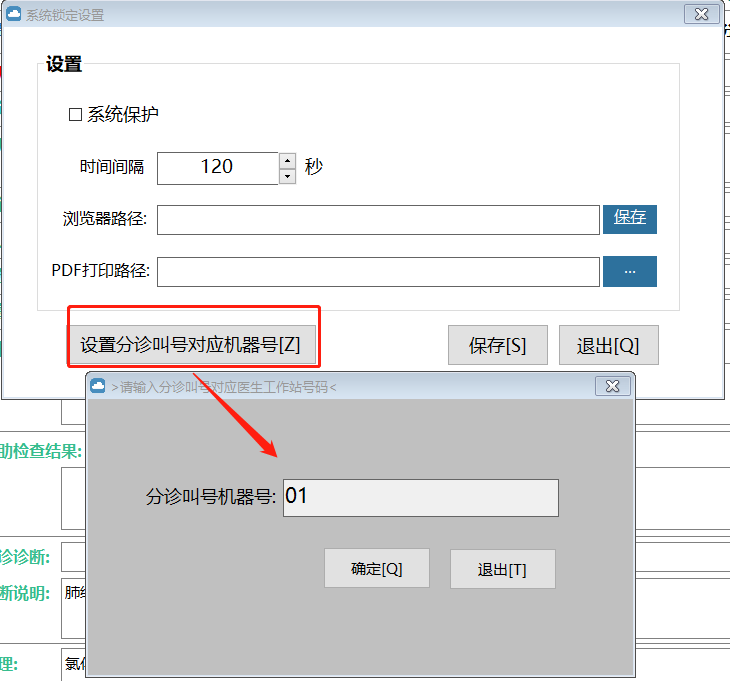
项目内容
- 信息发布系统：指定的LED显示屏设备发布信息（包括挂号信息、导医信息、价格信息、提示信息等）。
- 分诊系统：建立、维护和实施查看就诊患者队列，
- 门诊诊区叫号系统：医生需接诊下一位患者时，门诊医生工作站下达指令，通过诊区显示设备显示和语音设备叫号，通知患者就诊。 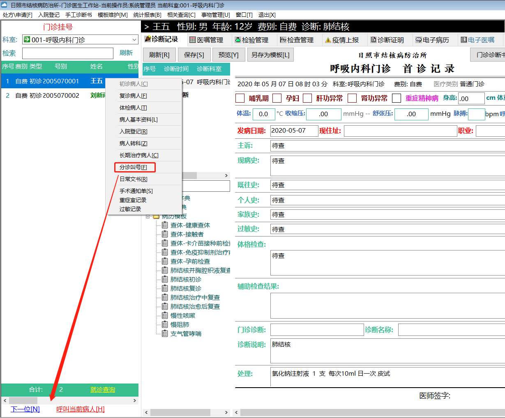
联系人：刘金金 销售经理
联系电话：17611177571
邮箱：6600n@163.com
公司地址： |
|